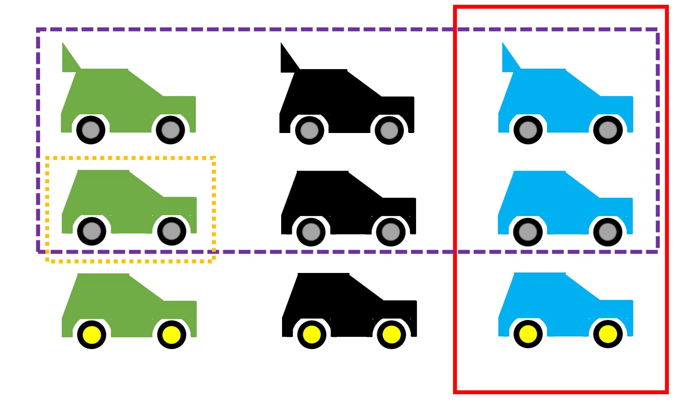

Theorien
Wissenschaft arbeitet mit Theorien. Wie diese genau aussehen, unterscheidet sich zwischen Disziplinen deutlich. Während naturwissenschaftliche Bereiche häufig mit mathematischen Modellen, also Formeln, arbeiten, die den Zusammenhang zwischen Variablen explizit und unmissverständlich beschreiben und Vorhersagen erlauben, arbeiten Sozialwissenschaften häufig mit verbalen Theorien im Stile von „X und Y hängen positiv miteinander zusammen” oder „je höher X, desto höher Y” und traditionelle Geisteswissenschaften arbeiten beispielsweise mit verbalen Erklärungen. Verbale Theorien haben den Vorteil, dass sie tendenziell leicht verständlich und allgemein anwendbar sind, allerdings unterliegen die verwendeten Begriffe häufig individuellen, kulturellen, oder zeitlichen Einflüssen und Diskutant*innen droht, im wissenschaftlichen Diskurs aneinander vorbei zu reden. Für formale Theorien werden alle beteiligten Variablen genau definiert und die Theorien haben häufig einen stark eingeschränkten Geltungsbereich (z.B. gelten viele physikalische Gesetze nur unter streng kontrollierten Bedingungen wie im Vakuum, bei einer bestimmten Temperatur, usw.). Die Sorge im Rahmen der Replikationskrise ist, dass Theorien nicht klar genug sind, um vorherzusagen, wann Replikationen erfolgreich sind und damit eine der Ursachen für geringe Replikationsraten sind (Buzbas und Devezer 2023; P. Smaldino 2019). Eine Theorie über die Konsequenzen von der Identifikation mit Geschlechterrollen muss beispielsweise die Veränderung von Geschlechterrollen und Besonderheiten von Geschlechterrollen in verschiedenen Ländern berücksichtigen. Dass ein und dasselbe Experiment zu diesem Thema in den USA im Jahre 1980 andere Ergebnisse hat als in Deutschland im Jahr 2020 ist wenig überraschend. Problematisch ist allerdings, dass – auch wenn solche Ergänzungen für viele sozialwissenschaftliche Theorien sinnvoll und nötig erscheinen – nur selten Aussagen darüber gemacht werden.
Verbale Theorien sind per se nicht weniger wissenschaftlich: Im Kontext der jeweiligen Bereiche heben sich wissenschaftliche Theorien stets durch ihren besonders hohen Grad an Systematizität (Hoyningen-Huene und Kincaid 2023) von alltagswissenschaftlichen Erklärungen ab. Bereiche, die Wert auf Vorhersage von Geschehnissen legen, kommen jedoch nicht ohne formale Theorien aus (Muthukrishna und Henrich 2019). Dabei sei hervorgehoben, dass bestimmte Wissenschaften eben keinen Wert auf Vorhersage legen (z.B. Geschichtswissenschaften oder Disziplinen, die vorwiegend hermeneutisch vorgehen). Sozialwissenschaften wie die Psychologie, quantitative Soziologie, oder Teile der Geisteswissenschaften („Digital Humanities”) nähern sich aktuell formalen Modellen an – in der Sozialpsychologie gab es den Aufruf, Theorien zu formalisieren beispielsweise schon einmal bei einer Krise in den 1970er Jahren (Lakens 2023). Dadurch, dass sich Theorien durch ihren Mangel an Objektivität selten von verschiedenen Forschenden verwendet werden und sich durch ihre flexible Auslegung nur schwer wiederlegen lassen ist dort eine enorm große Menge an nutzlosen Theorien entstanden (Ferguson und Heene 2012). Darunter sind auch einander widersprechende Theorien: Beispielsweise argumentierten Banker u. a. (2017), dass „ego depletion”, also die Erschöpfung von Selbstkontrollressourcen, dazu führt, dass Personen sich eher an Hinweise anderer Leute orientieren (S. 2) während Francis u. a. (2018) gegenteilig vermuteten, dass die Erschöpfung verhindert, dass Hinweise überhaupt verarbeitet werden können. Beide lieferten Daten, die die jeweiligen Theorien bestätigten, jedoch fand eine Folgeuntersuchung, dass vermutlich beide falsch lagen (Röseler u. a. 2020).
Robinaugh u. a. (2021) diskutieren Beispiele der Umwandlung verbaler Theorien in formale. Dieser Prozess hat zur Folge, dass sich neue und spezifischere Vorhersagen ableiten lassen. Wenn eine Theorie genauere Vorhersagen macht und die Menge an möglichen Ereignissen, die der Theorie widersprechen, steigt, bedeutet das einen gestiegenen empirischen Gehalt (Glöckner und Betsch 2011; Popper 1959/2008).
Theorien können sich in ihrem empirischen Gehalt unterscheiden. Damit ist konkret gemeint, wie spezifisch ihre Vorhersagen sind. Je mehr mögliche Beobachtungen eine Theorie widerlegen würden, desto höher ist ihr empirische Gehalt.
Nehmen wir den Fall, dass unsere Theorie uns erlaubt, Vorhersagen darüber zu machen, was für ein Auto zu einer bestimmten Zeit an einer bestimmten Straße entlang fährt. In Abbildung sind alle möglichen Autos abgebildet. Zur Vereinfachung gibt es in unserer Beispielwelt nur 9 verschiedene Autos, die sich hinsichtlich der Merkmale Farbe (grün, schwarz, blau), Heckflügel (mit, ohne), und Radfarbe (grau, gelb) unterscheiden.
Die lila Theorie sagt: Das beobachtete Auto hat graue Räder. Ohne Theorie wären für uns alle Autos gleich wahrscheinlich, die lila Theorie “verbietet”, dass das Auto gelbe Räder hat. Sie verbietet 3/9 Autos.
Die rote Theorie sagt: Das beobachtete Auto ist blau. Die Wahrscheinlichkeit, sie zu widerlegen wäre in unserer Musterwelt höher, nämlich 6/9. Weil die rote Theorie a priori, also ohne weiteres Vorwissen, sozusagen eine riskantere Wette ist, hat sie höheren empirischen Gehalt.
Den höchstmöglichen empirischen Gehalt hat die orangene Theorie: Das beobachtete Auto ist grün, ohne Heckflügel, und hat graue Räder. Sie verbietet alle außer einen Fall (8/9).
Das Beispiel mit den neun möglichen Auto-Typen ist natürlich stark vereinfacht. In bestimmten Bereichen schaffen es Forschende jedoch gelegentlich, Resultate von Experimenten auf wenige mögliche Ergebnisse herunterzubrechen und damit zwischen Theorien abzuwägen. Platt (1964). nennt das die Methode der starken Inferenz (Strong Inference) und argumentiert, dass Bereiche, in denen so vorgegangen wird, schnellen Fortschritt erleben. In Anlehnung daran fordert P. E. Smaldino (2017), dass wir mehr Theorien bzw. Modelle benötigen und Forschende immer mehrere Erklärungen gleichzeitig anbieten sollten. Das kann den Vorteil bringen, dass Forschende sich nicht auf eine Möglichkeit festlegen und Theorien nicht als Besitztum von jemandem behandelt werden. Solange sich eine Theorie klar einer Person zuordnen lässt, besteht die Gefahr das Kritik an der Theorie mit Kritik an der Person verwechselt wird.

Deduktion und Induktion
Methoden werden reformiert und Wissenschaftler*innen diskutieren, wie Wissenschaft funktioniert, ablaufen sollte, und welche Methoden sinnvoll und unsinnig sind. Wie am hermeneutischen Zirkel klar wird, führt ein Erkenntnisweg darüber, eine Menge von Beobachtungen zu einer Regelmäßigkeit oder Gesetzmäßigkeit zusammenzufassen (Induktion) und ein weiterer besteht daraus, aus einer Gesetzmäßigkeit bzw. Theorie Vorhersagen über noch nicht angestellte Beobachtungen zu machen (Deduktion). Immer wieder wird diese Unterscheidung im wissenschaftlichen Diskurs vernachlässigt oder ausgeblendet. Beispielsweise drehte sich ein Dialog in der Konsumentenpsychologie jahrelang darum, welcher Weg besser sei, obwohl beide Wege gleichermaßen legitim sind und einander ergänzen (Calder, Phillips, und Tybout 1981). Ähnlich verhält es sich bei Konflikten zwischen qualitativer und quantitativer Vorgehensweise, die formal betrachtet jeweils eher induktiv oder deduktiv vorgehen (Borgstede und Scholz 2021). Bei Replikationsforschung hat traditionell die induktive Seite mehr Beachtung erfahren (Hüffmeier, Mazei, und Schultze 2016; Yamashita und Neiriz 2024): Jeder Unterschied zwischen Replikation- und Originalstudie wird als mögliche Ursache für ein Scheitern des Replikationsversuches herangezogen um die Vertrauenswürdigkeit der Originalbefunde aufrechtzuerhalten (Baumeister und Vohs 2016). Dabei gerät außer Acht, dass kleinere Unterschiede zwischen Original- und Replikationsstudie (z.B. Verwendung der Maße, durchschnittliches Alter der Versuchspersonen, Sprache der Instruktion) von Theorien nicht erfasst werden – ihnen zufolge also unerheblich sein sollten – und eine fehlgeschlagene Replikation klar die Grenzen der Theorie aufzeigt und sich aus ihr Empfehlungen für die Modifikation von Theorien ableiten lassen (Cesario 2014; Dijksterhuis 2014). Ein Überblick über die Vorgehensweisen ist in der folgenden Tabelle.
| Facette | Deduktives Vorgehen (Theorie-geleitet) | Induktives Vorgehen (Phänomen-geleitet) |
| Verallgemeinerbarkeit steckt in… | der Theorie: Sie ist a priori maximal allgemein (z.B. gilt sie, bis anderweitig nachgewiesen, für alle Menschen). | den Daten: Erst vielfältige Beobachtungen in verschiedenen Kontexten erlauben die Annahme, dass das Phänomen allgemeingültig ist. |
| Veränderung von Verallgemeinerbarkeit | Mit mehr Beobachtungen sinkt die Allgemeingültigkeit. | Mit mehr Beobachtungen steigt die Allgemeingültigkeit (sofern sie bestätigender Natur sind). |
| Art der Prüfung | Vorhersagen der Theorie werden vorwiegend Versuchen der Widerlegung unterzogen. | Wiederholte Beobachtungen bestätigen den ursprünglichen Einzelfall. |
| Wahl des Studiensettings | Studentische Stichproben aus nur einem Land oder Laboruntersuchungen sind unbedenklich. | Der Kontext der Untersuchung sollte die Zielbedingungen (z.B. bei der Anwendung der Erkenntnisse in der Praxis) möglichst gut widerspiegeln. |
Merkmale induktiver und deduktiver Vorgehensweise, entnommen, übersetzt, und angepasst aus einem unveröffentlichten Manuskript von Röseler & Leder.
Hilfshypothesen
Über folgende Wege lassen sich Replikationsfehlschläge erklären:
Fehler erster Art der Originalstudie: Der Originalbefund war nur ein Zufallsbefund oder kam durch wissenschaftliches Fehlverhalten zustande (siehe Kapitel „Freiheitsgrade von Forschenden (Researchers’ Degrees of Freedom)“).
Fehler erster Art der Replikationsstudie: Die Originalstudie lag richtig, die Replikationsstudie hat einen Fehler gemacht (z.B. zu kleine Stichprobe, schlechte Kalibrierung der Instrumente, oder wissenschaftliches Fehlverhalten).
Grenzbereich des Phänomens: Beide Studien sind vertrauenswürdig. Die Replikationsstudie unterscheidet sich auf eine für die Theorie wichtige Weise (z.B. wurde die Replikationsstudie mit Personen aus einem anderen Land durchgeführt und die Theorie gilt nur für Menschen aus dem „Original-Land”).
Variante 3 ist konstruktiv und nimmt beide Einzelbefunde für robust hin. Notwendig dafür ist ein theoretisch relevanter Unterschied zwischen der Original- und Replikationsstudie, der durch die unendliche Anzahl möglicher wichtiger Faktoren in den meisten Fällen zutrifft (Smedslund 2015). Über diesen Weg lässt sich die Theorie dann modifizieren oder eine weitere Theorie aufstellen, die für den Kontext der Untersuchung ebenfalls berücksichtigt werden muss. Schwierig wird es, wenn Forschende nach bestem Wissen eine Replikation durchführen, diese “fehlschlägt” (also nicht das nachgewiesen wird, was nachgewiesen werden sollte), und andere Forschende die Replikation dafür kritisieren, dass sie etwas “falsch” gemacht hat. Nachdem Hagger u. a. (2016) unter Absprache mit Roy Baumeister dessen Ego Depletion Theorie mit einer großangelegten Studie prüften, kritisierten Baumeister und Vohs (2016), dass von Anfang an zu erwarten gewesen wäre, dass die Studie nicht funktioniert und bezeichnete die Studie als fehlgeleitet. Vohs, die Ko-Autorin der Kritik war, führte einige Jahre später eine weitere groß angelegte Replikationsstudie durch. Obwohl sie dieses Mal ihrem eigenen Rat folgen konnten, konnten die Forschenden wieder nicht den erwarteten Effekt finden (Vohs u. a. 2021).
Weiterführende Informationen
Eine philosophie Perspektive auf den Zusammenhang zwischen Theorie, Messungen, und Replikationen diskutiert @ramminger2023vermessen
Yarkoni (2019) argumentiert, dass das Replikationsprobleme in der Verallgemeinerung von Ergebnissen zu Theorien ihren Ursprung haben.
Fanelli diskutiert in einem Vortrag die Komplexität von Forschung als Grund für Replikationsfehlschläge und schlägt eine Theorie zur Messung von Komplexität vor (Fanelli u. a. 2022), Ein Video zu einem Vortrag ist online verfügbar: https://www.youtube.com/watch?v=CEAV7420jBk